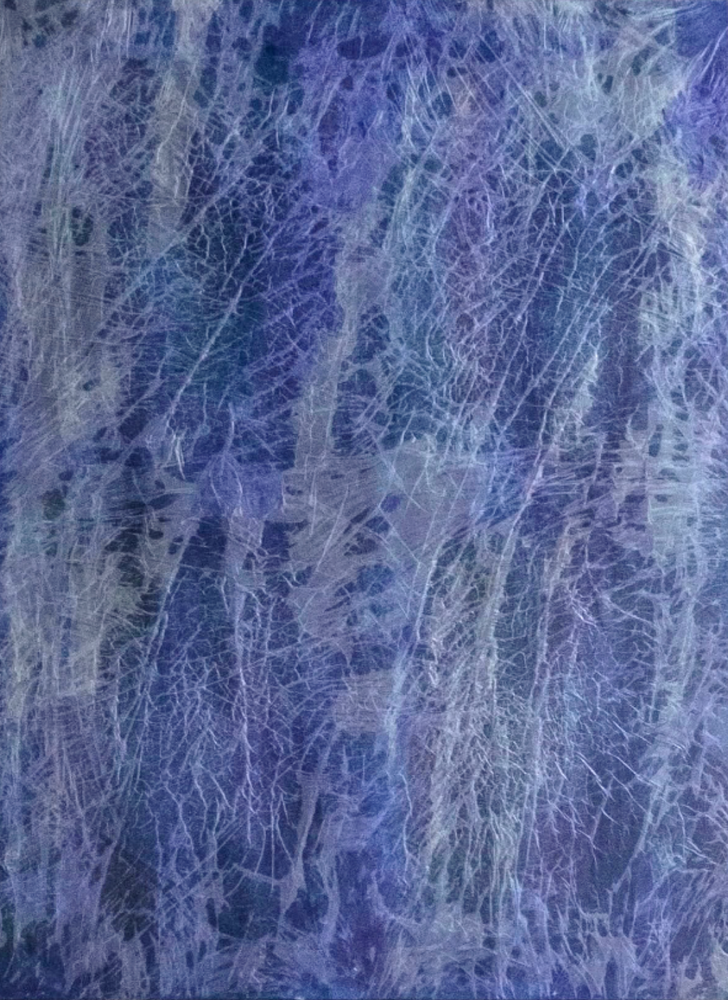
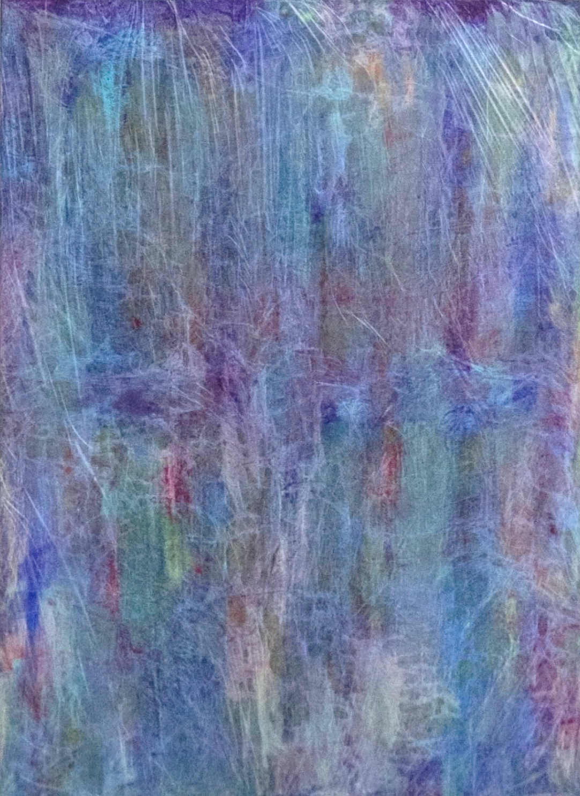

폭포 I
2023.03
Oil on plastic
72.7x50cm


폭포를 바라보면 마치 복잡한 생각들이 정리되는 듯한 느낌을 받았다.
이 폭포를 작품으로 표현함으로써 나의 감정과 생각들을 정리해보고자 했다.
작품의 상단은 여러 종류의 생각이 한 색으로 얽혀 있는 모습을 보여주며,
아래로 내려갈 수록 폭포처럼 흐르면서 색의 구분이 이루어지고 점차 정리되는 과정을 나타내고자 했다.